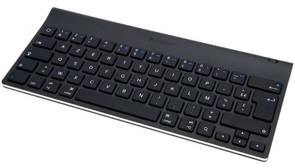
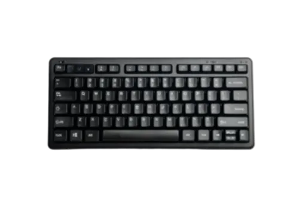
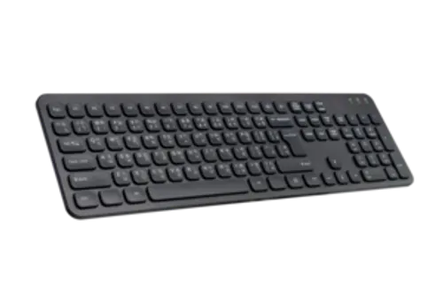
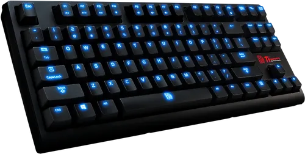
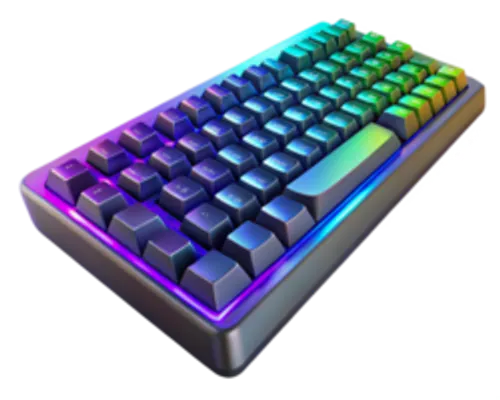
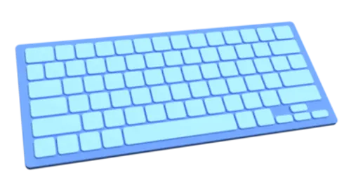

Teclado Mecânico Gamer RGB Vortex K1
O Vortex K1 entrega desempenho extremo para gamers exigentes, com switches mecânicos de resposta ultra-rápida e iluminação RGB personalizável. Seu corpo em alumínio escovado oferece durabilidade e um visual premium.
R$349,90
Teclado Compacto 60% Minimal Key
O Minimal Key é ideal para setups compactos. No formato 60%, oferece funcionalidade e estilo com teclas configuráveis e conexão USB-C. Perfeito para quem busca portabilidade sem perder performance.
R$289,90
Teclado Sem Fio Office Silent
O Office Silent traz teclas silenciosas e conforto para o trabalho diário. Com conexão sem fio estável e bateria duradoura, é uma excelente escolha para produtividade com discrição e elegância.
R$199,90
Teclado Gamer Low Profile Shadow X
O Shadow X combina perfil baixo com switches mecânicos rápidos e iluminação RGB suave. Seu design fino proporciona conforto para longas sessões de jogo com muito estilo.
R$329,90
Teclado Ergonômico Dividido ErgoSplit
O ErgoSplit tem um layout dividido que reduz a tensão nos pulsos e melhora a postura. Com teclas confortáveis e resposta precisa, é ideal para quem digita por horas todos os dias.
R$379,90
Teclado Bluetooth Retrô Typewriter
Inspirado em máquinas de escrever, o Typewriter une charme vintage e tecnologia moderna. Com teclas redondas, conexão Bluetooth e bateria recarregável, ele se destaca em qualquer ambiente.
R$259,90